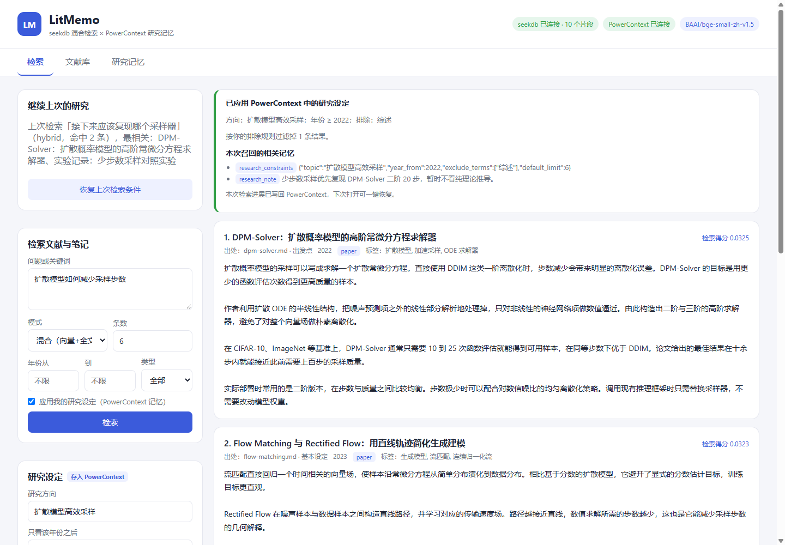

S文献证据层
seekdb
保存文献分块、中文向量、全文索引和结构化元数据。
- 向量相似度检索
- 中文全文检索
- RRF 混合排序
- 年份与类型过滤
输入：Markdown · TXT · PDF
Qoder × OceanBase 2026
LitMemo 把散落的中文文献、阅读笔记和实验记录连成一条可继续的研究链路：seekdb 找到相关内容，PowerContext 记住为什么找、找过什么。
只看 2022 年以后，排除综述，召回“优先复现 DPM-Solver”的笔记。
中文向量与全文索引经 RRF 融合，年份过滤直接作用于元数据。
保存查询、过滤条件和命中摘要，下个会话继续，而不是重来。
不再重复交代研究设定
不再只靠文件名找笔记
不再让进展消失在会话里
01 / 核心分工
文献证据与长期记忆分开保存，各自做擅长的事。你能在结果页看到哪条记忆真正参与了本次检索。
保存文献分块、中文向量、全文索引和结构化元数据。
保存研究设定、研究笔记与最近进展，跨会话继续工作。
文献正文进入 seekdb；长期研究上下文进入 PowerContext。展示页不伪造在线检索，完整应用在你的本机运行。
02 / 从导入到继续研究
Markdown 章节、PDF 页码随分块保存；检索结果能回到具体来源。
本地 bge-small-zh-v1.5 生成 512 维中文向量，与全文索引一起做混合检索。
页面展示应用的设定、召回的笔记和被排除的结果数，不做不可见“魔法”。
最近查询、过滤条件和前三篇标题写回 PowerContext，下次一键恢复。
03 / 真实运行效果
以下来自本机端到端验证后的真实界面。示例包含 7 篇原创中文文献与笔记；研究设定会排除 2022 年前的内容和“综述”。

验证脚本实际写入 seekdb 和 PowerContext，再检查三种检索、年份过滤、排除词、笔记召回和跨会话进展。
uv run python scripts/verify.py04 / 本地复现
需要 Python 3.11+、uv 和 Docker。首次下载中文向量模型需联网，之后使用本地缓存；无需外部 LLM 或 Embedding API。
比赛资产位于仓库的 qoder/litmemo。
git clone -b 2026-competition-ecosystem https://github.com/hechuan1023/wurenji-ai-project.git在项目目录启动本机数据库容器。
docker compose up -d使用随项目提供的本机配置，无需模型凭据。
powercontext server run --env-file deploy/powercontext.env.example另开终端，安装锁定依赖并运行应用。
uv sync --frozen
uv run uvicorn app.main:app --host 127.0.0.1 --port 8080启动后打开 http://127.0.0.1:8080，在“文献库”一键导入示例，再运行验证脚本。